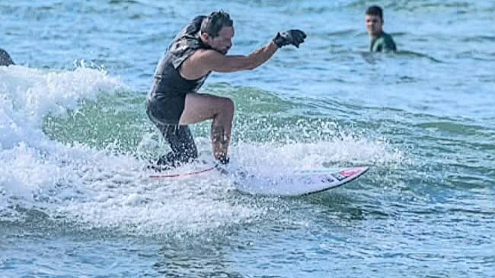
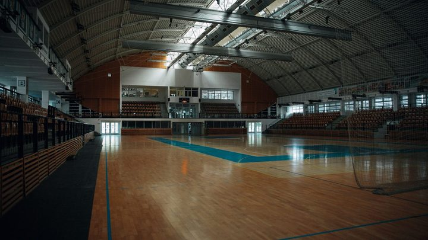
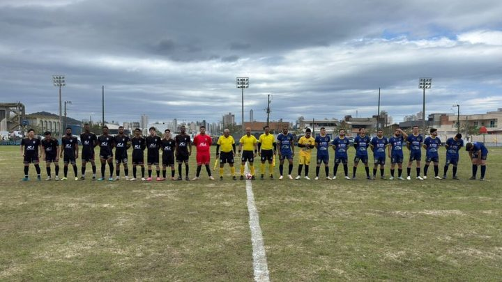

Itapema · Legislativo
Itapema · LegislativoCâmara de Itapema tem 640 projetos de lei esperando decisão, e 204 deles são do ano passado
A sessão de 8 de setembro, a mesma que aprovou o Parasurf em urgência.
A Prefeitura anunciou nesta segunda que o 1º Dia Municipal do Parasurf acontece neste sábado, 10 de outubro, na Praia do Centro, a partir das 9h, com aulão adaptado às 10h. A data existe porque a Câmara aprovou o PL 381/2026 em 8 de setembro, por unanimidade e em regime de urgência, e ele virou a Lei 5.130. São 32 dias entre o voto e a primeira edição. Na programação está João Energia, o atleta de Itapema que ficou em terceiro lugar no Campeonato Brasileiro de Parasurf em maio. Ele não foi o único: a cidade levou três atletas àquela competição.
Em 30 segundos · Modo de Leitura, formato original Santa Informa
Itapema tem um dia novo no calendário.
É o Dia Municipal do Parasurf.
Parasurf é surf de pessoa com deficiência.
A data é 10 de outubro, todo ano.
Este ano cai neste sábado.
É a primeira edição.
O encontro é na Praia do Centro.
Começa às 9h.
Às 10h tem aulão adaptado.
Quem organiza é a ASAI.
É a associação de surf da cidade.
As secretarias de Esportes e de Cultura apoiam.
A data nasceu na Câmara.
Foi o PL 381/2026.
Autor: vereador Maurinho do Gás, do PSD.
Aprovado em 8 de setembro.
Por unanimidade e em regime de urgência.
Virou a Lei 5.130.
Do voto à estreia foram 32 dias.
O aviso saiu 5 dias antes.
Itapema não começa do zero nisso.
Em maio foram três atletas daqui ao Brasileiro.
Foi em Porto de Galinhas, em Pernambuco.
João Energia ficou em terceiro no Kneel.
Henrique Sommer, em quarto no Down.
Daniel Ramos, em quinto no Prone 2.
João Energia está na programação de sábado.
Ele é diretor de Parasurf da ASAI.
O aviso não fala em inscrição.
Nem em prancha adaptada.
Nem em quantas vagas tem.
Poder PúblicoPublicada em Redação Santa Informa

Itapema celebra neste sábado, 10 de outubro, o 1º Dia Municipal do Parasurf. A programação é na Praia do Centro, começa às 9h e tem um aulão adaptado às 10h, para quem quiser experimentar o mar e a prancha. Quem promove é a Associação de Surf Amigos de Itapema, a ASAI, com apoio das secretarias municipais de Esportes e de Cultura. Na ação está João Energia, diretor de Parasurf da associação e o atleta que trouxe para a cidade o terceiro lugar do Campeonato Brasileiro da modalidade, em maio. A Prefeitura divulgou o convite nesta segunda-feira, cinco dias antes.
O dia não apareceu do nada. Ele é a Lei Municipal 5.130, que começou como o Projeto de Lei 381/2026, do vereador Maurinho do Gás (PSD). A Câmara aprovou o texto na 27ª Sessão Ordinária, em 8 de setembro, em regime de urgência e por votação unânime dos vereadores presentes. A lei fixa a comemoração em 10 de outubro todo ano e diz que o município poderá promover palestras, exposições, apresentações artísticas e competições na data. Entre o voto e esta primeira edição passaram 32 dias. Nós acompanhamos essa sessão: ela foi a que aprovou o Parasurf em urgência e deixou outras 20 matérias da Ordem do Dia sem placar.
O que dá peso à data é que ela não chega a uma cidade sem parasurf. Entre 20 e 24 de maio, no Campeonato Brasileiro e Seletiva Mundial de Parasurf, na Praia do Borete, em Porto de Galinhas, Pernambuco, Itapema teve três representantes. João Energia ficou em terceiro no Kneel Masculino, a categoria em que se compete ajoelhado na prancha. Henrique Sommer terminou em quarto no Down Masculino. Daniel Ramos ficou em quinto no Prone 2. A competição consagrou 23 campeões nacionais e definiu os brasileiros para o Mundial da ISA. Juntar as duas pontas é o ponto: a cidade que acabou de criar a data já tinha pódio na modalidade, e quem subiu nele está na programação de sábado.
O resumo de 30 segundos está no topo e a versão completa é o texto acima. Aqui ficam as três leituras da casa sobre o mesmo assunto.
Clara, a otimista
Lei que cria data comemorativa costuma nascer e dormir. Esta acordou em 32 dias, com praia marcada, hora marcada e uma associação da cidade tocando a programação. Isso já é diferente do normal.
E tem o melhor: a data não chegou para inventar um assunto. Itapema levou três atletas ao Brasileiro em maio e voltou com pódio. O calendário está correndo atrás do que a cidade já fazia no mar, e não o contrário. Quem for na Praia do Centro no sábado vai ver gente que compete de verdade.
Seu Prudêncio, o criterioso
Merece atenção o que o aviso não traz. Para o público desta atividade, o detalhe operacional não é detalhe: prancha adaptada, cadeira anfíbia e apoio na entrada da água são o que decide se a pessoa participa ou fica olhando. O texto não cita nenhum deles, e também não diz se tem inscrição ou quantas vagas são.
Vale acompanhar o prazo também. Cinco dias entre o convite e o evento é pouco para quem depende de transporte adaptado, de acompanhante ou de combinar o dia com alguém. E o ponto da Praia do Centro não está indicado, numa orla que tem quilômetros de areia.
Uma sugestão útil, de custo zero: publicar antes de sábado o ponto de encontro, o equipamento disponível e um telefone para tirar dúvida. Dito isso, o mérito está feito. A data saiu da Câmara com voto unânime, virou lei, ganhou programação no primeiro ano e tem uma associação local responsável. Muita lei comemorativa não chega nem perto disso.
Caco, o sarcástico
O Brasil cria data comemorativa como quem respira. A diferença é que a maioria delas nunca sai do papel timbrado, e esta aqui marcou hora, dia e praia em pouco mais de um mês. Alguém não leu o manual.
Reclamação registrada: o aviso manda todo mundo para a Praia do Centro sem dizer em que pedaço da Praia do Centro. É tipo marcar encontro "no litoral". Mas convenhamos, procurar uma galera com prancha numa manhã de sábado não deve ser a missão mais difícil do mundo.
E sem ironia nenhuma: a cidade tem três caras que foram ao Brasileiro e um deles voltou com o terceiro lugar. Isso não é data comemorativa, isso é currículo.
Fontes: a data, o horário, o local, o aulão das 10h, a ASAI, o apoio das secretarias, a participação de João Energia e a menção à Lei Municipal 5.130 estão em Itapema celebra o 1º Dia do Parasurf neste sábado, publicado pela Prefeitura de Itapema em 5 de outubro de 2026. A aprovação do PL 381/2026, a autoria do vereador Maurinho do Gás (PSD), a 27ª Sessão Ordinária, o regime de urgência, a unanimidade e o teor da lei estão na notícia da Câmara de Vereadores de Itapema de 8 de setembro de 2026. Os três atletas, as colocações, as datas de 20 a 24 de maio, a Praia do Borete, em Porto de Galinhas, e os 23 campeões nacionais estão em Itapema conquista pódio no Parasurf Brasileiro, da Prefeitura, de 28 de maio de 2026. A sessão de 8 de setembro está na nossa matéria de 9 de setembro. Os 32 dias entre o voto e a estreia e os 5 dias entre o aviso e o evento são conta nossa, feita em 5 de outubro de 2026.
Itapema · LegislativoA sessão de 8 de setembro, a mesma que aprovou o Parasurf em urgência.

Itapema · EsporteO calendário escolar da cidade, que também tem etapa paradesportiva.

Itapema · EsporteO outro calendário esportivo que a cidade abriu para o fim do ano.